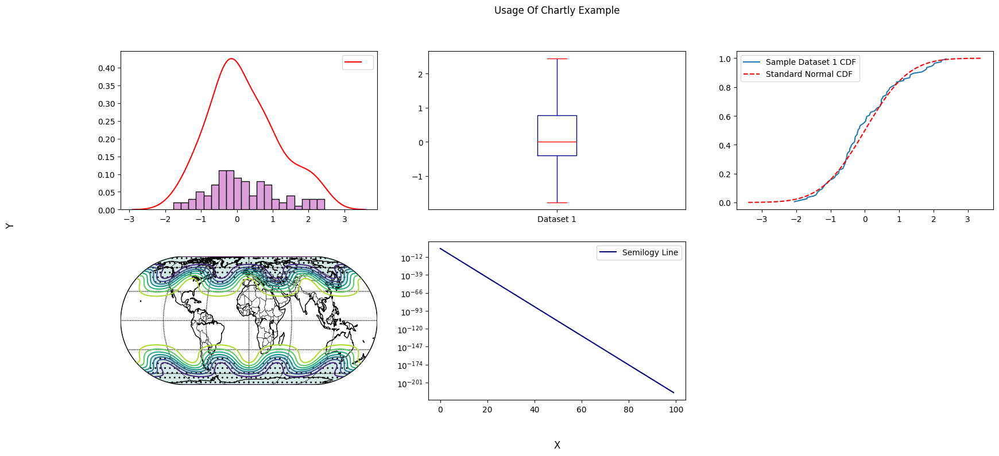

Chartly¶
Overview¶
Chartly is a simple plotting tool designed to help users create scientific plots with ease. Whether you want to test a distribution for normality or plot contours using a map of the globe, Chartly enables you to generate visualisations with minimal effort. Chartly also allows users to create multiple overlays and subplots on the same figure.
Requirements¶
The chartly package requires the following packages:
matplotlib >= 3.8.4
numpy >= 2.2.6
scipy >= 1.14.0
seaborn >= 0.13.2
For geographic visualisation using basemaps, the following additional dependency is required:
basemap >= 2.0.0
Installation¶
To install the chartly package, run the following command:
pip install chartly
Usage¶
The Chartly package currently supports the following scientific plots:
Line Plot
Histogram
Contour Plot
Normal Probability Plot
Cumulative Distribution Function Plot
Normal Cumulative Distribution Function Plot
Density Plot
Box Plot
Basemap Plot
Chartly allows users to build plots by first creating a main figure and
then adding subplots to the figure. To initialize a main figure, users
can create a Chart instance and optionally pass a dictionary to
customize the figure. The dictionary supports the following keys:
super_title(str): Title of the main figuresuper_xlabel(str): X-axis labelsuper_ylabel(str): Y-axis labelshare_axes(bool): Share axes across subplots (default: True)
import chartly
import numpy as np
# 1. Define the main figure labels
super_axes_labels = {
"super_title": "Usage Of Chartly Example",
"super_xlabel": "X",
"super_ylabel": "Y",
"share_axes": False,
}
# 2. Initialize the chart
plot = chartly.Chart(super_axes_labels)
To create a plot, users can directly add a subplot with
add_subplot(...). Additional plots can be added to the same subplot
with add_overlay(...).
# 3. Define some data
data = np.random.randn(100)
# 4. Add a subplot
plot.add_subplot("histogram", data)
To overlay a new plot onto the current subplot, use add_overlay(...).
# 5. Overlay another plot
plot.add_overlay("density", data)
To add multiple subplots at once, users can call add_subplots(...).
# 6. Add multiple subplots
plot.add_subplots(
["boxplot", "normal_cdf"],
data,
)
To create a basemap plot, users can call add_basemap(...) and pass
longitude, latitude, and value grids.
# 7. Define basemap data
nlats, nlons = 73, 145
delta = 2.0 * np.pi / (nlons - 1)
lats = 0.5 * np.pi - delta * np.indices((nlats, nlons))[0, :, :]
lons = delta * np.indices((nlats, nlons))[1, :, :]
wave = 0.75 * (np.sin(2.0 * lats) ** 8 * np.cos(4.0 * lons))
mean = 0.5 * np.cos(2.0 * lats) * ((np.sin(2.0 * lats)) ** 2 + 2.0)
z = wave + mean
# 8. Add a basemap plot
plot.add_basemap(
lon=lons * 180.0 / np.pi,
lat=lats * 180.0 / np.pi,
values=z,
customs={
"proj": "eck4",
"lon_0": 0,
"draw_countries": True,
"draw_parallels": True,
"draw_meridians": True,
"mask": z < 0,
"contour": True,
"hatch": True,
"hatch_customs": {"type": "mask"},
},
)
Users can also customize subplot axes.
Axes can be scaled (e.g., linear → log)
The base of the log scale can be changed
Ensure axes are not shared when modifying scales
# 9. Define a custom function
exp_func = lambda x: np.e ** (-500 * x + 2)
x = np.linspace(0, 1, num=100)
y = list(map(exp_func, x))
# 10. Add customized subplot
plot.add_subplot(
"line_plot",
y,
axes_labels={"scale": "semilogy", "base": 10, "linelabel": "Semilogy Line"},
)
Finally, render the figure using render().
# 11. Render the figure
plot.render()
To save the figure, use the save() method.
# 12. Save the figure
plot.format = "jpg"
plot.fname = "my_plot"
plot.save()
{kind=link}
